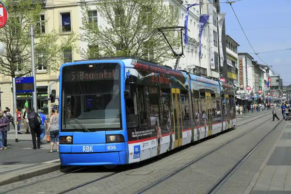
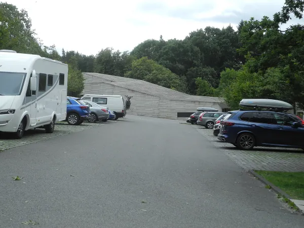

Start / Parken Innenstadt
Aaron Schiele
geprüft am
geprüft am
Die Parkhäuser in der Innenstadt
Alle liegen wenige Gehminuten von der Fußgängerzone entfernt. Welches gerade Platz hat, zeigt die Stadt Kassel auf ihrer Seite zu Parkhäusern und Parkplätzen mit freien Plätzen je Anlage, fast in Echtzeit.
| Parkhaus | Einfahrt | Plätze | Geöffnet |
|---|---|---|---|
| Tiefgarage Friedrichsplatz | Steinweg und Du-Ry-Straße | 980 | Mo bis Do 6 bis 24 Uhr, Fr und Sa 6 bis 1 Uhr, So 9 bis 24 Uhr |
| Kurfürsten Galerie | Spohrstraße und Mauerstraße | 560 | rund um die Uhr |
| Wilhelmsstraße | Garde-du-Corps-Straße 5 | 322 | Mo bis Sa 7 bis 2 Uhr, So 11 bis 2 Uhr |
| Parkplatz Rathaus | Karlsplatz | 228 | Mo bis Do ab 17 Uhr, Fr ab 13 Uhr, So ab 9 Uhr |
| City Point | Mauerstraße, Ecke Hedwigstraße | 220 | Mo bis Sa 7 bis 21.15 Uhr |
| Galeria | Neue Fahrt 7 | 210 | rund um die Uhr |
| Martinskirche | Oberste Gasse | 113 | Mo bis Sa 6.30 bis 22 Uhr |
Die Tiefgarage Friedrichsplatz ist die größte und liegt mitten zwischen Fridericianum, Staatstheater und Königsstraße. Sie erkennt dein Kennzeichen bei der Einfahrt, hat Frauen-, Eltern-Kind- und Behindertenplätze, einen Aufzug und Ladestationen für E-Autos und E-Bikes. Die Einfahrt ist 2,10 Meter hoch. Mit der Online-ParkCard der Parkhausgesellschaft ist die erste halbe Stunde frei, danach kostet jede angefangene Stunde 2 Euro.
Im Parkhaus Galeria an der Neuen Fahrt zahlst du am Automaten oder online, das geht noch bis 48 Stunden nach dem Parken. Die Kurfürsten Galerie ist mit 1,95 Metern Einfahrtshöhe die niedrigste. Mit einem Transporter passt am ehesten der Parkplatz Rathaus, seine Einfahrt am Karlsplatz ist 3,60 Meter hoch. Ins Parkhaus Wilhelmsstraße am Kino kommst du auch spät abends noch hinein und wieder heraus.
Die übrigen Parkhäuser haben eigene Tarife ihrer Betreiber.
Parken am Straßenrand: Zonen und Gebühren
Am Straßenrand gilt in der Innenstadt die Zone Zentrum. Hier zahlst du montags bis samstags von 9 bis 20 Uhr, höchstens drei Stunden lang.
| Zone | Wann gebührenpflichtig | Preis | Höchstens |
|---|---|---|---|
| Zentrum | Mo bis Sa 9 bis 20 Uhr | 1 Euro je halbe Stunde, 6 Euro für 3 Stunden | 3 Stunden |
| Zone II, außerhalb des Zentrums | Mo bis Sa 9 bis 18 Uhr | 1 Euro je Stunde | 3 Stunden, mit Schild bis 9 Stunden für 6 Euro |
| Auedamm | täglich 9 bis 18 Uhr | wie Zone II | 3 Stunden |
Du kannst am Automaten zahlen oder per Handyparken, dann minutengenau. Die Zonennummer steht am Automaten, für das Zentrum ist es 341051. Gekennzeichnete Elektroautos parken mit ausgelegter Parkscheibe noch bis Ende 2026 gebührenfrei.
Seit Mai 2026 weitet die Stadt die gebührenpflichtigen Zonen Stadtteil für Stadtteil aus. Achte deshalb auch außerhalb der Innenstadt auf Automaten und Schilder.
Parken am Sonntag
Sonntags ist der Straßenrand im Zentrum und in der Zone II frei. Ausnahmen sind der Auedamm und der Willy-Brandt-Platz am Bahnhof Wilhelmshöhe, dort zahlst du auch am Sonntag. Bei den Parkhäusern haben City Point und Martinskirche sonntags geschlossen, die Tiefgarage Friedrichsplatz öffnet um 9 Uhr, die Wilhelmsstraße um 11 Uhr.
Park and Ride: Auto stehen lassen, mit der Tram in die Stadt

Wenn du dir die Parkplatzsuche ganz sparen willst, stell das Auto am Stadtrand ab. Visit Kassel nennt fünf Park-and-Ride-Plätze:
- Auestadion, Damaschkestraße 35
- Ihringshäuser Straße, Linderweg 53, an der Straßenbahnhaltestelle Ihringshäuser Straße
- Wilhelmshöhe, Bertha-von-Suttner-Straße 21, am Bahnhof Wilhelmshöhe
- Bahnhof Niedervellmar, Kasseler Straße 1 in Vellmar
- Papierfabrik, Leipziger Straße 24 in Kaufungen
Vom Bahnhof Wilhelmshöhe fahren die Linien 1, 3 und 4 direkt zum Friedrichsplatz. Auf dem Graf-Bernadotte-Platz dort kostet ein ganzer Tag 5 Euro, eine Woche 15 Euro. Noch günstiger ist die Leister'sche Wiese am Platz der Deutschen Einheit mit 1 Euro pro Tag. Mehr zum Parken rund um den ICE-Bahnhof steht unter Parken am Bahnhof Wilhelmshöhe.
Umweltzone, Feste und Wohnmobil
Eine Umweltzone gibt es in Kassel bisher nicht, eine Plakette brauchst du also nicht.
Bei Großveranstaltungen gelten eigene Tagessätze, für ein Auto im Stadtgebiet 5 Euro, am Bergpark 7 Euro. Rund um den Weihnachtsmarkt liegen unter anderem die Tiefgarage Friedrichsplatz, City Point und die Kurfürsten Galerie, alles Weitere zum Markt unter Weihnachtsmarkt Kassel. Wer zum Herkules oder zu den Wasserspielen will, parkt nicht in der Innenstadt, dafür gibt es eigene Parkplätze, siehe Parken am Bergpark.
Mit dem Wohnmobil passt du in kein Parkhaus. Ein Stellplatz liegt an der Giesenallee 9, gegenüber dem Campingplatz. Eine Nacht kostet in der Wintersaison bis 3. Januar 2027 16 Euro, reservieren kannst du nicht.
Häufige Fragen
Welches Parkhaus ist in Kassel am größten?
Die Tiefgarage Friedrichsplatz ist mit 980 Plätzen das größte Parkhaus der Kasseler Innenstadt. Die Einfahrten liegen am Steinweg und in der Du-Ry-Straße.
Welche Parkhäuser in Kassel sind rund um die Uhr geöffnet?
Die Kurfürsten Galerie und das Parkhaus Galeria an der Neuen Fahrt sind durchgehend geöffnet. Die Tiefgarage Friedrichsplatz hat freitags und samstags bis 1 Uhr nachts offen, die Wilhelmsstraße jeden Tag bis 2 Uhr.
Was kostet Parken in der Kasseler Innenstadt?
Am Straßenrand in der Zone Zentrum zahlst du 2 Euro je Stunde, höchstens drei Stunden lang. In der Tiefgarage Friedrichsplatz ist mit der Online-ParkCard die erste halbe Stunde frei, danach kostet jede angefangene Stunde 2 Euro.
Ist Parken in Kassel am Sonntag kostenlos?
Am Straßenrand im Zentrum und in der Zone II ja, sonntags musst du dort nichts zahlen. Am Auedamm und am Willy-Brandt-Platz zahlst du auch sonntags.
Braucht man in Kassel eine Umweltplakette?
Nein, Kassel hat bisher keine Umweltzone eingeführt, eine Plakette ist nicht nötig.
Wo kann man in Kassel günstig parken und mit der Tram in die Stadt fahren?
Am günstigsten ist die Leister'sche Wiese mit 1 Euro pro Tag. Am Bahnhof Wilhelmshöhe kostet der Graf-Bernadotte-Platz 5 Euro am Tag, von dort fahren die Linien 1, 3 und 4 zum Friedrichsplatz.
Quellen abgerufen am 17.11.2026
- Stadt Kassel Parkhäuser und Parkplätze in der Innenstadt · Tiefgarage Friedrichsplatz · Parkhaus Kurfürsten Galerie · Parkhaus City Point · Parkhaus Galeria · Parkhaus Martinskirche · Parkhaus Wilhelmsstraße · Parkplatz Rathaus · Gebührenpflichtige Parkzonen · Parkgebührenordnung · Feinstaubplakette
- Visit Kassel Tiefgarage Friedrichsplatz · Park and Ride
- Weihnachtsmarkt Kassel Anreise
- documenta 16 Besuch und FAQ
- hessenschau Neue Parkgebührenzonen in Kassel
- Campingplatz Kassel Preise
Weiterlesen

Parken Bahnhof Kassel-Wilhelmshöhe
Parken am Bahnhof Kassel-Wilhelmshöhe: acht Parkplätze im Vergleich, Preise pro Stunde und Tag, der günstigste für mehrere Tage und wo es kostenlos geht.
Weiterlesen
Wilhelmshöhe Parkplatz
Parken am Bergpark Wilhelmshöhe: die Parkplätze am Herkules und am Schloss, Preise an normalen Tagen und Wasserspieltagen, dazu Bus und Tram.
Weiterlesen
Weihnachtsmarkt Kassel 2026
Märchenweihnachtsmarkt Kassel 2026: vom 23. November bis 30. Dezember, täglich 11 bis 20 Uhr. Standorte, Highlights, Tram, Parken und Anreise.
Weiterlesen